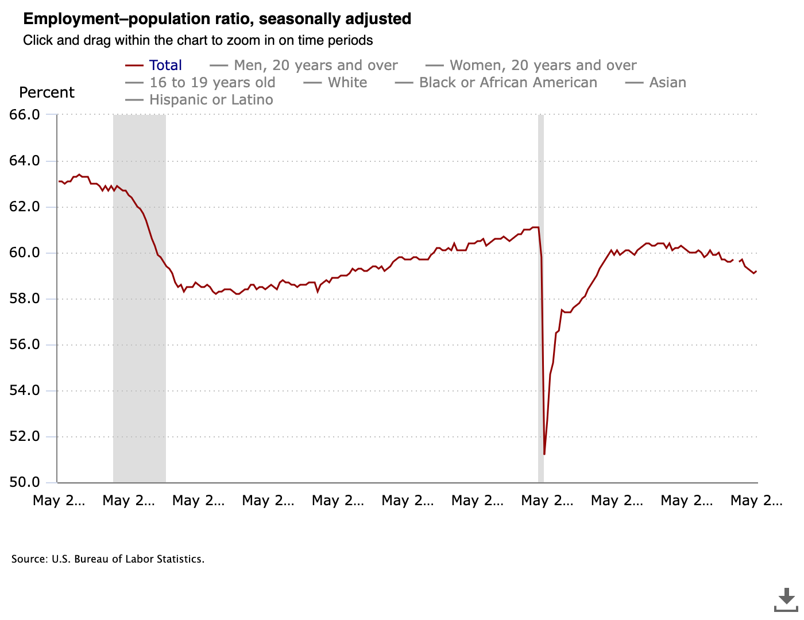
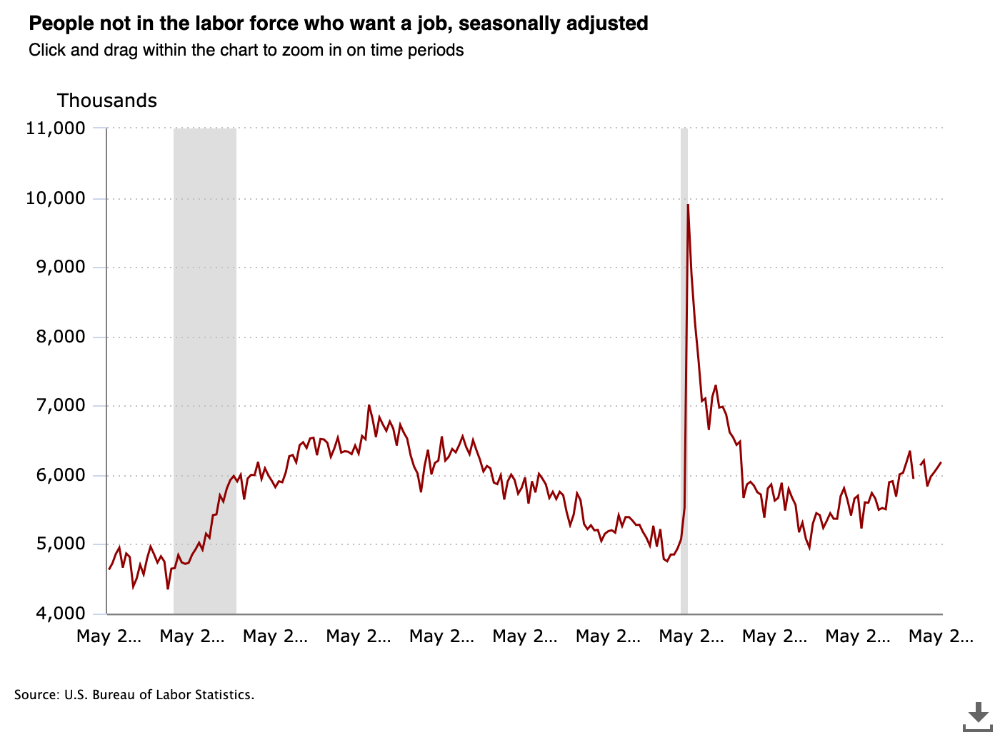

The Stochastically K-Shaped Job Market
Published 2026-06-05

The job market has gone K-Shaped in a weird way.
The job market seems to have gone stochastically K-Shaped. It is simultaneously hot and impossible, in that for some the odds of finding a job are very high, but for others it's nearly impossible.
This is only stochastically true, so your experience may very.
Anecdotes
I had someone in a group chat today say they'd take 5 months of severance if offered because the job market is hot enough. At a happy hour I met a new grad software engineer who told me that 1000 job applications hadn't gotten them a single interview...
Data
The BLS has a lot of data which shows that things are not great, not terrible. The unemployment rate in May 2026 was 4.3%, down from 4.5% in November of last year.
https://www.bls.gov/charts/employment-situation/persons-not-in-the-labor-force-selected-indicators.htm
But the ratio of employment to people is decreasing:
And the number of people not in the labor force is increasing:

And the number of 'long term unemployed' people who have been unemployed for more than 27 weeks was 27.5% of the overall unemployed population in May 2026, up from 19.2% in May 2023.
https://www.bls.gov/charts/employment-situation/unemployed-27-weeks-or-longer-as-a-percent-of-total-unemployed.htm
So 1.3 million more people are unemployed than 3 years ago. The number of people not in the labor force who would like a job is up 600,000 from May of 2024.
Conclusion
The job market is hot for some, impossible for others, and stochastically that makes me sad thinking about the people who got laid off 18 months ago and may never find a job again despite wanting one. Increase your luck by learning, practicing competence, and helping out your fellow humans, as networks are a significant factor in what makes a person hot outside or inside of a job. Plus, tautologically, the world is overall better when we're good to each other.